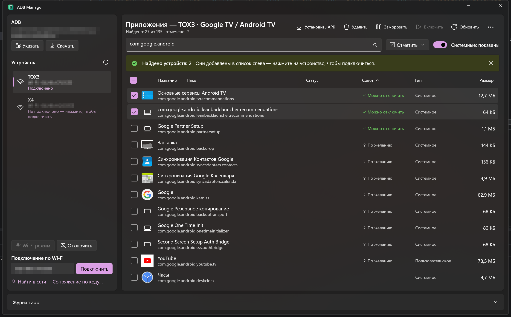

ADB Manager
Убрать рекламу и лишние приложения с Android TV, Google TV, ТВ-приставки и смартфона — без root, с компьютера на Windows. Бесплатно и с открытым кодом.

Что умеет
Очистка от рекламы
Подсказывает, что можно отключить: рекламные сервисы и телеметрию Яндекс ТВ, Салют ТВ, Xiaomi, TCL, Haier, Hisense, Sony, Philips, Google TV — базы ЧистыйТВ и CleanYourTV (200+ моделей ТВ).
Удаление и заморозка
Удаление и заморозка приложений по ADB, в том числе предустановленных системных, без root. Массовые действия и пресеты.
Защита и откат
Критичные пакеты, главный экран и входы HDMI защищены. Перед изменениями — бэкап, «Вернуть как было» отменяет всё.
Установка APK
Перетащите APK в окно — программа проверит место на ТВ, при нехватке очистит кэш и установит.
Лаунчер без рекламы
Установка Projectivy Launcher или LTvLauncher с GitHub авторов — главный экран без рекламных рядов.
DNS и приватность
AdGuard DNS с проверкой интернета и автооткатом, аудит микрофона, голосового ассистента и ACR.
Как начать
- Скачайте архив из последнего релиза (
win-x64— обычный ПК,win-arm64— Snapdragon) и распакуйте. - На телевизоре или телефоне включите «Для разработчиков» и «Отладку по USB» или «Отладку по сети».
- Запустите
AdbManager.exe, подключитесь по USB, по адресу или кнопкой «Найти в сети». - «Отметить → Рекомендуемые к отключению» → «Заморозить». Что-то не так — «… → Вернуть как было».
In English
ADB Manager is a free, open-source ADB GUI for Windows 10/11. Debloat Android TV, Google TV, TV boxes and Android phones without root: see every app with its name and icon, freeze or uninstall ads, telemetry and bloatware with advice from the ChistyTV and CleanYourTV databases, install APKs, set AdGuard private DNS, install an ad-free launcher, and undo any change. The interface is available in English and Russian. Read more · Download.